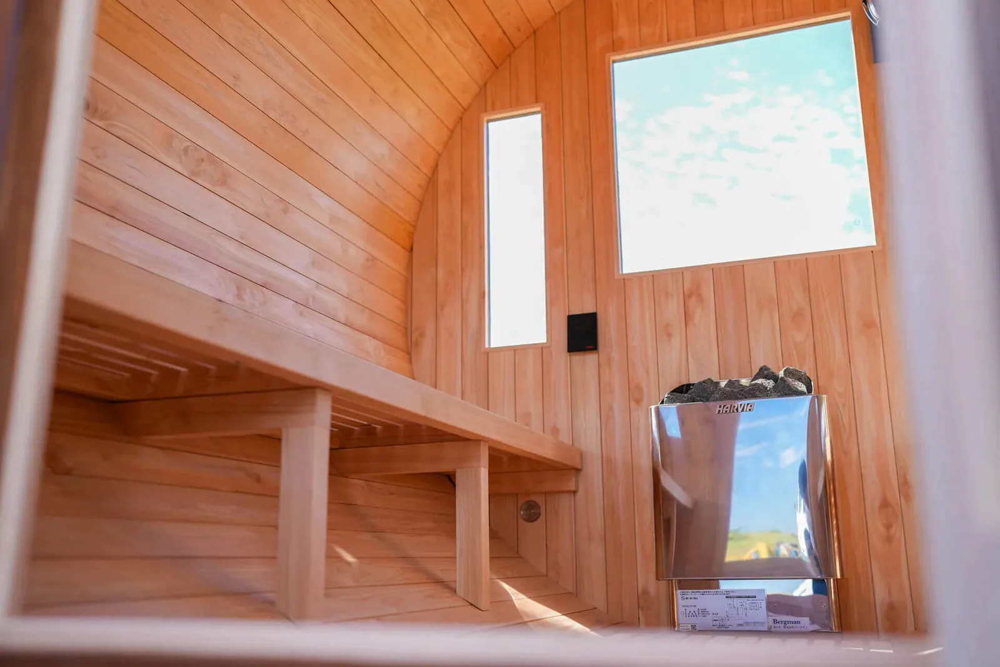
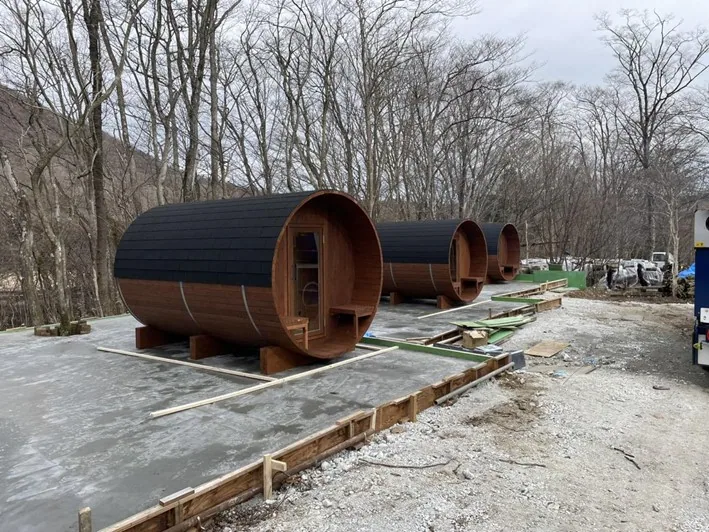

バレルサウナは効率的な熱分布を実現する樽型サウナで、国産バレルサウナは日本の気候に合わせて耐久性に優れた国産のヒノキ材や杉材を使用することが多いです。バレルサウナの値段も木材の材質やサイズ、メーカーによるデザインの違いなどが影響します。
国産バレルサウナの特徴・魅力とは？値段はどのくらい？

そもそもバレルサウナとは？
バレルサウナとは、その名のとおり丸い樽（バレル）の形をしたサウナで、木材を使用して円筒形に作られています。この独特の形状が、熱効率の良さや均一な温度分布をもたらし、効率的にサウナを楽しむことができます。また、デザイン性の高さも魅力の一つで、設置することでおしゃれな空間を演出することが可能です。国産バレルサウナは、国内で生産されたヒノキなど良質な木材を使用し、日本の気候に合わせて設計されているため、海外産のバレルサウナより比較的に耐久性や安全性に優れています。
国産バレルサウナの特徴・魅力
国産バレルサウナの特徴・魅力は、その質とこだわりにあります。使用される材料は、主に耐久性と香りが特徴の国産ヒノキを中心に、厳選された木材が使われています（一部、杉材もあります）。これらの木材は日本の四季に耐えうる強さを持ち、長期間にわたってその美しさを保つことができます。また、職人によって丁寧に作られることが多く、細部にまでこだわったデザインや仕上がりは見る人を魅了します。さらに、国産ならではの安心感も魅力の一つです。国内で生産されているため、納期の遵守、アフターサービスやメンテナンスがしやすい点も、国産バレルサウナを選ぶ大きな理由となっています。
北欧産バレルサウナとの違い
現在、日本で入手可能なバレルサウナには、国産と北欧産（他には中国産）のものがあります。国産バレルサウナと北欧産バレルサウナを比較すると、最も際立つ違いは使用される木材です。国産バレルサウナでは、主に国内産のヒノキがよく使用されます。ヒノキはその独特の香りと、水や湿度に対する強い耐性で知られています。これに対し、北欧製のバレルサウナでは「スプルース」という針葉樹が好まれています。スプルースは耐久性と耐熱性に優れ、長年にわたりフィンランドやエストニアでサウナ用木材として愛用されてきました。このように国産と北欧産のバレルサウナは、それぞれの地域の特色を反映した木材が使われることで、異なる体験を提供します。
国産バレルサウナの値段
国産バレルサウナの値段は、様々な要因によって大きく異なります。
4～6人程度の中型サイズでは150～180万円程度です。そこに、オプション窓ガラスやストーブ（電気、薪、ガス）、屋根材・塗装、配送料などが加わると、最終価格は、180万円から220万円程度となります。
ここで重要なのは、使用される木材の種類やサイズ、メーカーによるデザインの違いなどによって価格が左右されるという点です。特に、国内産の高品質なヒノキ材を使用したモデルや、細部にわたるカスタマイズやオプションなどが施されたバレルサウナは価格が高めです。しかし長期的な視点で見れば、これらのバレルサウナは耐久性と使用感の面で優れており、初期投資を考慮しても、その価値は十分にあるといえるでしょう。
一部国産ヒノキ木材を使用したメーカーでは、最終価格が350～400万円となることもあります。
値段に影響を与える要素
バレルサウナの値段に影響を与える要素は、主に使用する木材、サイズ、オプションが挙げられます。これらの要素はバレルサウナの品質や耐久性、そして使用感やデザインに直結しています。
材質
国産ヒノキなど、高品質の木材を使用し、職人によって作られたバレルサウナは価格が高くなる傾向にあります。しかし、木材の種類によっては耐久性や防腐性に優れており、長期的なメンテナンスコストを下げることができます。
サイズ
バレルサウナの大きさも価格を左右します。一般的には、大きなサイズほど多くの材料や加工工程が必要となり、価格が上がります。
ストーブ／ヒーター
バレルサウナの大きさに応じた出力の薪・ガスストーブや電気ヒーターによって、金額も変わってきます。
メーカー
各メーカーによってデザインの独自性、製作工程、カスタマイズオプション、品質保証期間などが異なり、これらの要素が価格に反映されます。
このような要素を理解することで、予算内で最適なバレルサウナを選択することができます。
国産ヒノキを使用！バレルサウナをお探しならRink SAUNAへ

国産バレルサウナは、その独特の形状と機能性で注目を集めています。価格帯に幅があることから、予算やニーズに応じて選ぶことができます。また、国産メーカーならではの細やかなサービスや品質の高さも魅力の一つです。様々な要素が価格に影響するため、購入前にはしっかりと比較検討することが大切です。
高品質な国産バレルサウナを購入したい方は、Rink SAUNAをご利用ください。6次産業化と国内での製造体制により、高品質な国産ヒノキ材を使用しながらリーズナブルな価格設定を実現しています。サウナ初心者から上級者まで、幅広いニーズに対応する豊富なラインナップやヒーターの種類をご用意しています。保守パックプランなどもあり、導入後も安心です。資料請求やお見積りをご希望の方は、お気軽にお問い合わせください。